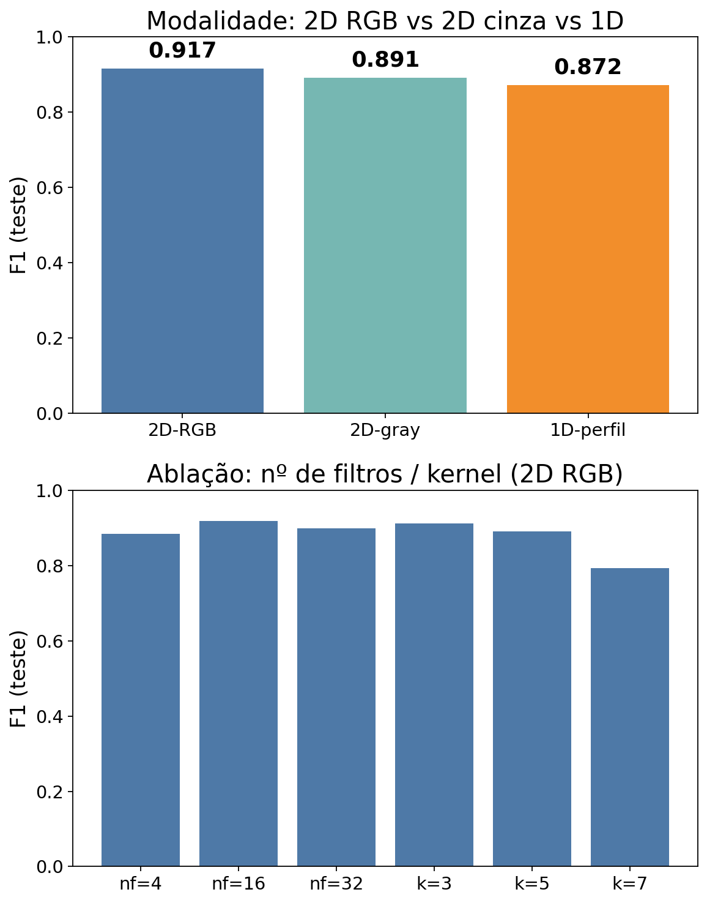
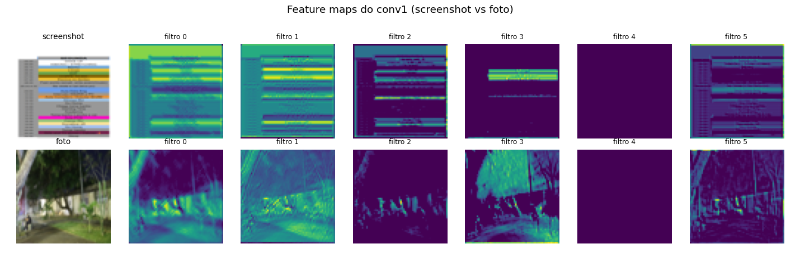

CNNs (PyTorch) para classificação binária real: foto vs screenshot, com 450 imagens da coleção pessoal (Google Drive). Comparando 2D vs 1D, RGB vs grayscale, e visualizando os feature maps. Treino no RTX 3060.
imagem inteira vs perfil de linha
efeito dos canais
o que cada filtro enxerga
S(i,j) = Σ_c Σₘ Σₙ I(i+m, j+n, c)·K(m,n,c) + b
A = ReLU(S) → MaxPool → ... → fc1D: mesma ideia com kernel 1D deslizando sobre o sinal.
| Modalidade (seed=42) | Acc | F1 |
|---|---|---|
| 2D RGB | 0.911 | 0.917 |
| 2D grayscale | 0.889 | 0.891 |
| 1D (perfil de linha) | 0.867 | 0.872 |
Tabela da seed=42 (ilustração). Teste pareado (n=30): 2D > 1D é sinal REAL (t≈5 — a estrutura espacial importa), mas RGB vs gray = empate (t=1.3 — a cor não agrega em screenshot×foto). O "ranking" RGB>gray>1D do single-seed misturava sinal real (2D>1D) com ruído (RGB=gray). Ablação: k=3 melhor, k=7 cai.

